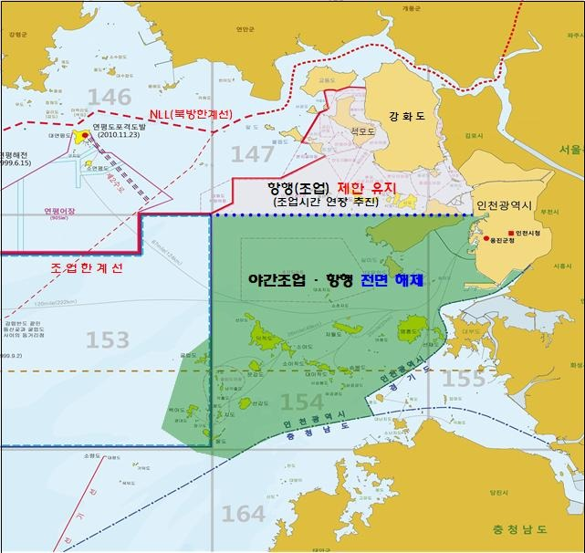
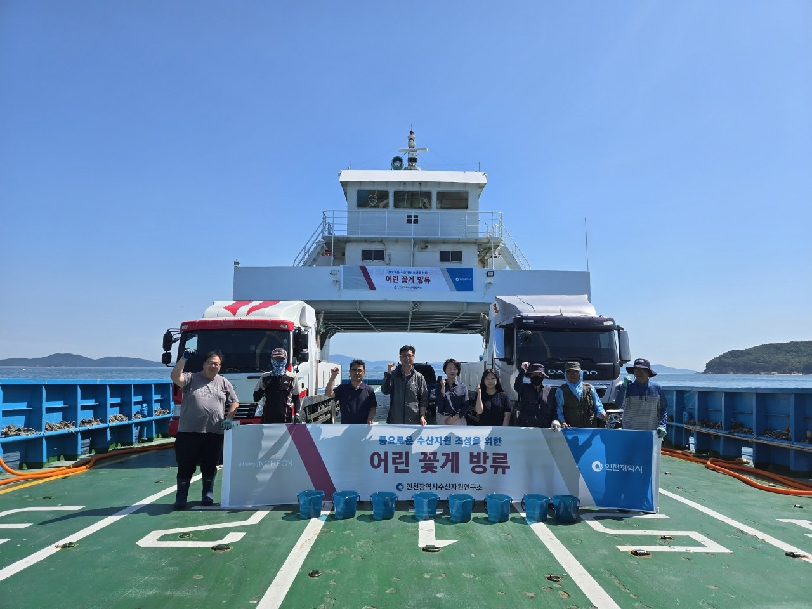
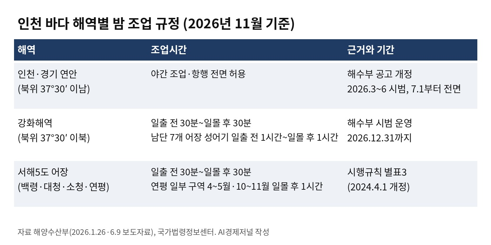

[어민·수산] 44년 만에 열린 인천 연안 밤바다, 서해5도는 일몰 후 30분
인천 3~6월 꽃게 2096톤, 1년 전보다 75.6% 증가
서해5도 조업시간 규정, 2024년 4월 개정 별표 그대로
AI경제저널=김갑봉 기자 | 인천 연안 어선이 올해 3월부터 밤바다에서 그물을 걷는다. 1982년부터 44년 동안 묶여 있던 인천·경기 연안의 야간 조업 금지를 해양수산부가 풀었다. 인천시 집계로 3~6월 인천 꽃게 생산량은 2096톤이다. 1년 전보다 75.6% 많다.
같은 인천 바다라도 북방한계선(NLL) 앞은 다르다. 서해5도 어장의 조업시간은 지금도 일출 전 30분부터 일몰 후 30분까지다. 해수부는 그동안 연안 어업인들이 조업시간 제한에 따른 어려움과 수익 감소를 호소해 왔다고 밝혔다.
1982년 빗장, 44년 만의 연안 개방

인천·경기 연안과 강화해역은 접경해역의 안보 문제로 1982년부터 야간 조업이 금지됐다. 어선은 일출부터 일몰까지만 조업했다. 해수부에 따르면 출항지에서 조업지까지 최대 5시간이 걸렸다.
인천시는 2022년부터 해수부·국방부·해양경찰청과 27차례 협의했다고 밝혔다. 해수부는 1월 「인천광역시 해역 일시적 조업 또는 항행 제한 공고」를 고쳤다. 북위 37도30분 이남 해역에서 3~6월 시범으로 밤 조업을 허용했다.
시범 기간에 해수부는 어선사고 같은 문제가 있는지 살폈다. 7월 1일부터는 같은 해역의 야간 조업을 전면 허용했다. 대상은 인천과 경기 선적 어선이다. 지방정부는 어업지도선을 밤에 교대로 배치하는 안전관리 계획을 낸다.
해수부가 내놓은 기대치는 야간어장 3039㎢, 어선 1200여척, 추가 어획 연 3200톤이다. 늘어날 소득은 연 187억원으로 잡았다. 3039㎢는 강화해역 연장분까지 더한 면적이다.
꽃게 2096톤, 하루 평균 51척

인천시는 9월 29일 시범 기간 실적을 내놨다. 3~6월 조업일수는 1년 전보다 6.9%, 위판량은 10.6% 늘었다. 꽃게 생산량은 1193톤에서 2096톤으로 903톤 늘었다.
밤 조업에 나선 어선은 하루 평균 51척이다. 3월 39척에서 4월 55척, 5월 59척으로 늘었고, 6월에는 49척이었다. 5월 가운데 가장 많은 날에는 97척이 나갔다.
인천시는 꽃게 주 조업 시기인 9~11월 하반기 실적도 계속 점검한다. 김익중 인천시 농수산식품국장은 "44년 만의 규제완화가 실제 조업현장에서 성과로 이어지고 있다"고 말했다.
인천시 수산자원연구소는 6월 9~10일 중구 을왕리와 강화군 매음리 해역에 어린 꽃게 170만마리를 풀었다. 연구소는 이 꽃게가 내년 봄 조업 때 230g 이상 성체로 자라기를 기대한다고 밝혔다.
강화해역 1시간, 12월 31일까지 시범
북위 37도30분 이북 강화해역은 전면 허용에서 빠졌다. 해수부는 이 해역에서 12월 31일까지 일출 전 30분부터 일몰 후 30분까지 조업을 시범 운영한다.
강화해역 남단 7개 어장은 봄·가을 성어기에 한 시간을 더 쓴다. 만도리B, 새터, 선수, 후포·긴곳지선, 분오리, 동검도, 황산도 어장이다. 이 어장은 일출 전 1시간부터 일몰 후 1시간까지 조업한다.
인천시는 강화도 주변 어장의 조업시간을 4시간 늘려 달라고 건의했다. 1월 발표한 협의 결과는 일출·일몰 전후 30분씩, 모두 1시간이었다. 인천시는 당시 강화군 어업인들이 수용하기 어렵다는 입장이라고 밝혔다. 인천시는 9월 강화 서검어장 조업한계선 확대도 관계기관과 협의하겠다고 밝혔다.
서해5도 어장, 일출 전·일몰 후 30분

서해5도 어장의 조업시간은 해수부령인 「어선안전조업 및 어선원의 안전·보건 증진 등에 관한 법률 시행규칙」 별표3이 정한다. 2024년 4월 개정된 이 별표에 따르면 백령·대청·소청도 주변어장의 조업시간은 일출 전 30분부터 일몰 후 30분까지다.
연평도 주변어장도 같은 시간이다. 일부 구역은 4월 1일~5월 30일과 10월 1일~11월 30일에만 열리고, 이때는 일몰 후 1시간까지 조업한다. 소청도 남쪽 해역의 E어장은 4월 1일부터 11월 30일까지 열린다.
인천시에 따르면 2024년 개정으로 서해5도 어장은 1855㎢에서 2024㎢로 169㎢ 넓어졌다. 새 E어장 144㎢, 연평도 어장 25㎢다. 백령도 주변어장은 안보와 해상경비 문제로 확장에서 빠졌다.
한 대청도 선주는 2019년 넓힌 어장을 두고 "거리가 멀어 유가 등 경비문제로 실효성이 크지 않았다"고 말했다. 인천시가 2024년 3월 보도자료에 실은 발언이다.
NLL 앞 꽃게 어장, 중국어선 단속
서해5도 앞바다는 꽃게 어장이자 남북이 경계를 달리 보는 바다다. 미국 하와이대 반 다이크 교수 연구진은 2003년 『마린 폴리시』 논문에서 1999년과 2002년 서해 교전을 분석했다. 연구진은 경계 분쟁에 꽃게잡이 경쟁이 겹쳐 충돌이 났다고 진단했다.
논문에 따르면 남한은 꽃게 3300톤, 전체 꽃게 어획의 3분의 1을 연평도 부근에서 잡았다. 연구진은 서해 꽃게잡이가 북한의 주요 외화벌이 수단이라고도 적었다. 연구진은 군사력을 뺀 공동어로수역과 어선 행동규범을 해법으로 제시했다.
중국어선도 이 바다에 들어온다. 정부는 8월 27일 외교부·통일부·국방부·해수부·해경청 합동으로 서해 NLL 불법조업 외국어선 대응 방안을 발표했다. 앞서 8월 11일 단속세력 31척이 연평도 인근에서 중국어선 8척을 나포하고 24척을 퇴거했다.
황종우 해수부 장관은 6월 "접경수역에서의 조업 여건을 지속 개선"하겠다고 밝혔다. 강화해역 시범은 12월 31일 끝난다. 서해5도 어장의 시간 규정은 2024년 4월 개정 별표 그대로다.
참고문헌
- Van Dyke, Jon M.·Valencia, Mark J.·Garmendia, Jenny Miller, 「The North/South Korea Boundary Dispute in the Yellow (West) Sea」, 『Marine Policy』 27(2), 2003, 143-158쪽, https://doi.org/10.1016/S0308-597X(02)00088-X
- 「어선안전조업 및 어선원의 안전ㆍ보건 증진 등에 관한 법률 시행규칙」 [별표 3] 조업한계선 또는 조업자제선 인근 지역ㆍ도서의 어선이 조업 또는 항행할 수 있는 해역, 기간 및 조업조건(개정 2024.4.1), 해양수산부령 제802호(2026.7.1 시행), 국가법령정보센터, https://www.law.go.kr/flDownload.do?gubun=&flSeq=166346513&bylClsCd=110201
- "서울면적 4배 크기, 인천·경기 연안 야간 조업금지 빗장 열린다", 해양수산부 보도자료, 2026.1.26, https://www.mof.go.kr/doc/ko/selectDoc.do?docSeq=64665&bbsSeq=10&menuSeq=971
- "7월부터 인천·경기 연안 야간 조업 전면 허용", 해양수산부 보도자료, 2026.6.9, https://www.mof.go.kr/doc/ko/selectDoc.do?docSeq=66930&bbsSeq=10&menuSeq=971
- "인천 연안 야간조업 규제 44년 만에 풀렸다", 인천광역시 보도자료, 2026.1.28, https://www.incheon.go.kr/IC010205/view?repSeq=DOM_0000000014051028
- "인천해역 44년 만의 야간조업 규제완화…꽃게 생산량 75.6% 늘었다", 인천광역시 보도자료, 2026.9.29, https://www.incheon.go.kr/IC010205/view?repSeq=DOM_0000000015651885
- "인천시, 어린 꽃게 170만 마리 을왕·강화 해역 방류", 인천광역시 보도자료, 2026.6.10, https://www.incheon.go.kr/IC010205/view?repSeq=DOM_0000000014901035
- "「서해5도에 봄」 왔다! 접경해역 황금어장 대폭 확장", 인천광역시 보도자료, 2024.3.6, https://www.incheon.go.kr/IC010205/view?repSeq=DOM_0000000009428946
- "정부, 『서해 북방한계선(NLL) 불법조업 외국어선 대응 방안』 발표", 외교부·통일부·국방부·해양수산부·해양경찰청 공동 보도자료, 2026.8.27, https://www.kcg.go.kr/kcg/na/ntt/selectNttInfo.do?nttSn=71549
[사진·도표 출처]
- [사진 1] 인천광역시(공공누리 제1유형)
- [도표 1] 인천광역시(공공누리 제1유형)
- [도표 2] AI경제저널 작성. 자료 해양수산부, 국가법령정보센터
관련기사
- [해운협정] 한중 해운회담 28차 합의, 인천·대산 서해 뱃길 셋 연다
- [해양경계] 한중 해양경계 16차 회담, 서해5도 앞에서 멈춘 세 경계선
- [인천해양주권⑮] 인천항 투자 65% 줄 때 부산항은 84% 늘었다
- [해양 AI 융복합⑬] 2032년 1단계 9선석 진해신항, 2조원 장비와 단일 운영사로 짜는 피지컬 AI 항만
저작권자 © AI경제저널 무단전재 및 재배포, AI학습 및 활용 금지